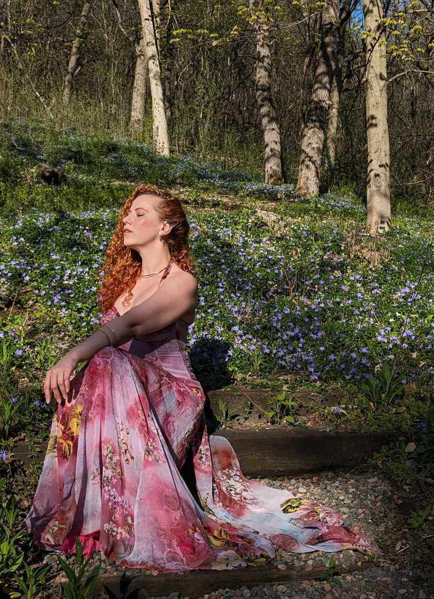

Oana Patran
Oana Patran is a multifaceted artist, healer, and dancer hailing from Romania and currently based in Chicago. As a modern-day witch, she combines her diverse talents to create transformative experiences and art that speaks to the soul.
Drawing from her rich cultural heritage and spiritual practices, Oana's work spans multiple disciplines, each infused with her unique energy and vision.
Fine Art

Oana's fine art is a visual representation of her inner world, blending traditional techniques with modern sensibilities. Her paintings and sculptures often incorporate elements of Romanian folklore, mysticism, and personal symbolism.
Through her art, Oana explores themes of transformation, spirituality, and the interconnectedness of all things. Each piece is imbued with her unique energy, creating a powerful and immersive experience for the viewer.
Healing
As a healer, Oana draws upon ancient wisdom and modern techniques to facilitate transformation and growth. Her practice incorporates elements of energy work, herbalism, and intuitive guidance.
Oana's healing sessions are tailored to each individual, addressing physical, emotional, and spiritual imbalances. Her gentle yet powerful approach has helped many find peace, clarity, and renewed vitality.
Dance
Oana's approach to dance is deeply rooted in expression and healing. Her performances blend traditional Romanian folk dance with contemporary movements, creating a mesmerizing fusion that captivates audiences.
Through dance, Oana explores themes of identity, spirituality, and the connection between body and soul. Her movements are a physical manifestation of her inner world, inviting viewers to experience a journey of emotion and energy.